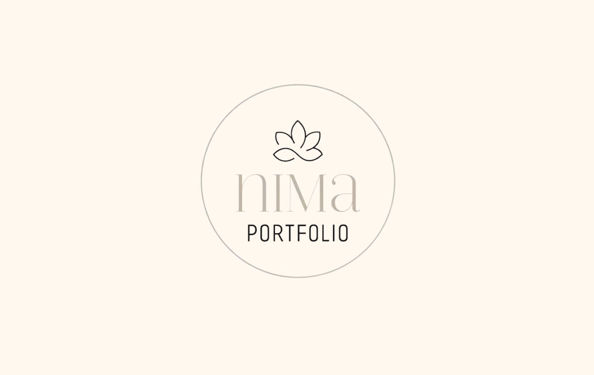
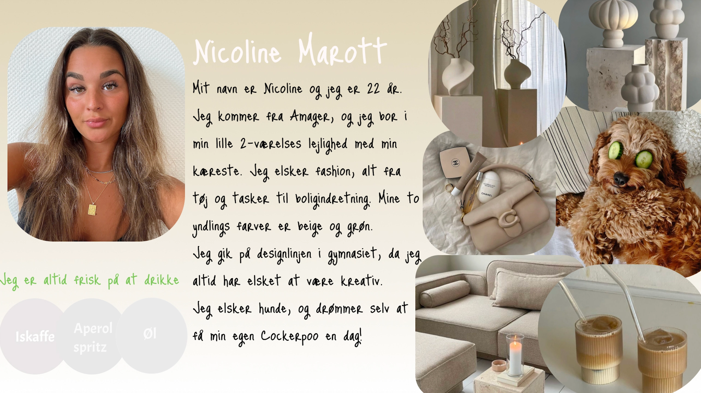
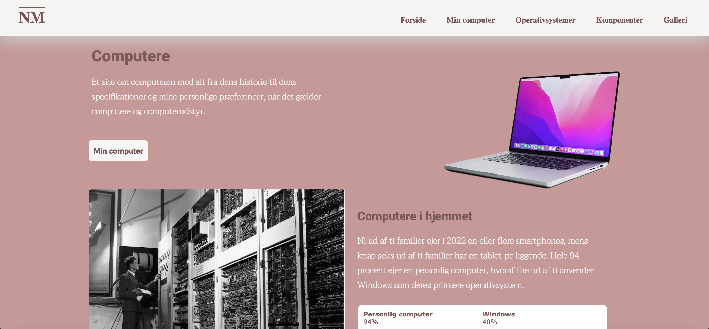
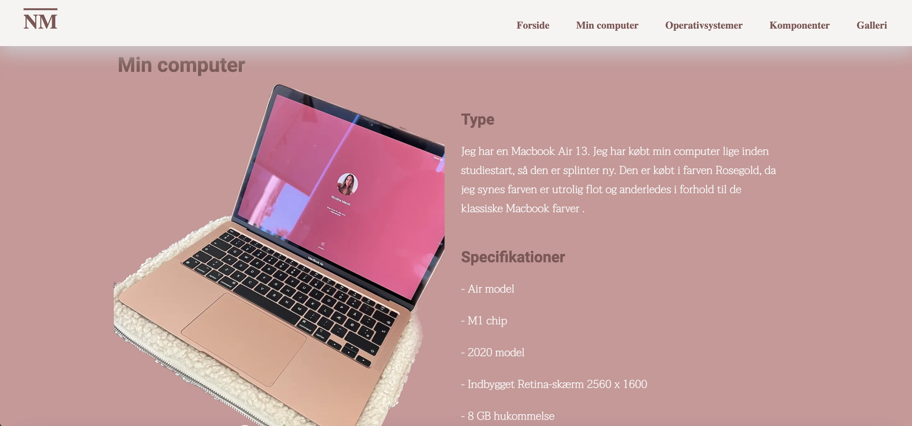
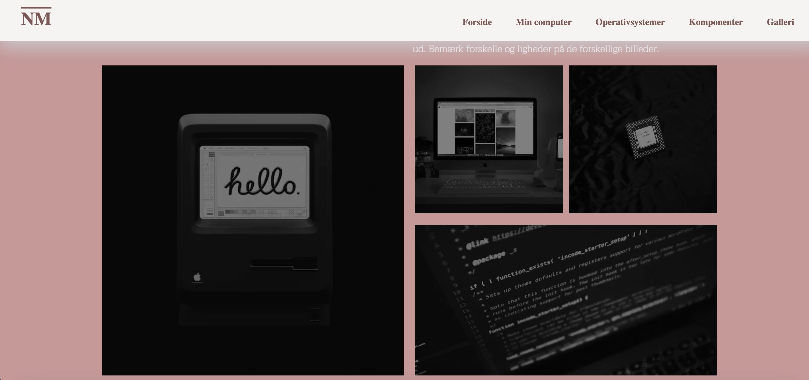
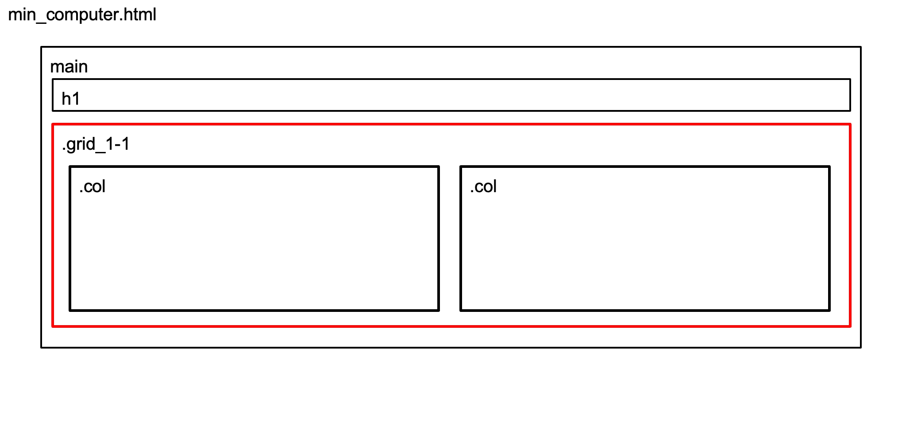

❮
❯
I dette tema, blev jeg introduceret til alt det basale og de vigtigste redskaber en
Multiemediedesigner
har
brug for. Jeg fik derfor vist programmet VS code, hvilket er programmet jeg skal bruge til alt
kodning
gennem hele
min studietid. Her blev jeg så lært op i hvordan kodning er opbygget gennem HTML og CSS.
Efterfulgt blev
jeg præsenteret for programmerne Figma, Figjam samt Photoshop.
Disse programmer skulle jeg bruge til alt design. Første design opgave blev jeg sat til at lave et
visitkort i Figma, og vise det frem til resten af klassen. Efterfølgende blev jeg oplært i
billedebehandling via Squoosh.
Til sidst skulle jeg udfra hvad jeg havde lært i temaet, igennem en studiestartsprøve som skulle
beståes
for at fortsætte studiet. Her skulle jeg både bruge grid, layoutdiagram samt forskellige fonts.